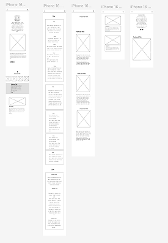
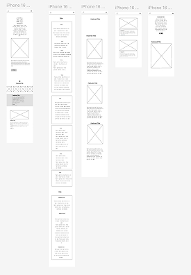

I Tema 5 arbejdede vi i grupper, hvor vi startede med at udforme en teamkontrakt. Den hjalp os med at
fastsætte fælles
aftaler omkring ansvar, kommunikation og samarbejde. Det skabte tydelige rammer og forventninger, som gjorde
vores
proces mere effektiv.
Vi gennemførte en fælles brainstorm, hvor vi genererede idéer og fandt frem til det koncept, vi ville bygge
hjemmesiden
ud fra. Vi brugte Scrum-metoder til at organisere arbejdet - bl.a. ved at opdele opgaver i mindre dele,
holde korte
statusmøder og planlægge i sprint-lignende faser. Det gjorde det nemmere at samarbejde og følge projektets
fremdrift.
Derudover lavede vi brugertest, hvor vi fik feedback fra testpersoner, der prøvede vores prototype og
fungerende sider.
Det gav os værdifuld indsigt i, hvad der fungerede, og hvad vi kunne forbedre ift. brugervenlighed og
navigation.
Som en del af planlægningsfasen lavede vi et wireframe og et layoutdiagram, der visualiserede hjemmesidens
struktur og
placering af indhold. Det gav et fælles overblik og gjorde det nemmere at fordele opgaverne i gruppen.
Vi arbejdede individuelt med at kode hver vores HTML-side, som blev samlet til én fælles hjemmeside. I HTML
brugte vi
semantiske tags for at sikre en logisk og tilgængelig opbygning. Designet blev stylet med CSS, hvor vi
brugte bl.a.
flexbox, farver, typografi og margin/padding for at skabe en ensartet og visuelt tiltalende hjemmeside.
I arbejdet anvendte vi centrale UI/UX-principper som visuelt hierarki, kontrast, læsbarhed, responsivt
design og
konsistens, så siden blev både funktionel og brugervenlig for målgruppen. Temaet har givet mig erfaring med
både det
tekniske og samarbejdsmæssige i webudvikling.